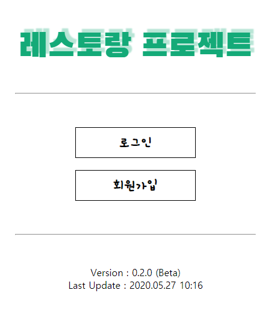

基本情報
| 名前 | ファンビョンジュン HWANG BYUNG JUN |
| 生年月日 | 1996.09.07 |
| 専攻 | 東アジア学部 日語日文学科 |
プロジェクト
写真を押すと詳細情報が見れます。

Web Restaurant
使用技術
JSP、Java、Servlet、Javascript、CSS、MySQL、Git
作業期間
2020.04.28 ~ 2020.05.27
概要
MVCパターンモーデル2でデザインしたホームページです。ログイン、会員管理、注文管理、注文内訳確認、テーブル管理、メニュー管理などの機能がある小さなレストランを充実に具現してみました。データベースはMySQLを使用し、NAVERのDBServerを借りました。